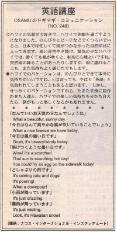

お天気いろいろ。
ハワイの気候が大好きで、ハワイで休暇を過ごすようになりました。のんびりとビーチなどでくつろいでいると、日本では忙しくて気がつかなかった、自然が目に入ってきます。高い青空や夕焼け。湿気の少ないハワイでは、暑くても風が吹くと、本当に心地よいですね。突然、雨の降ることがあったりしますが、雨に濡れることも、また気持ちよく感じたりもします。
ハワイでのバケーションは、のんびりとできて本当に気持ちがいいですね。とは言っても、やはり、「英語」と気負われてしまうこともあると思います。しかし、せっかくのバケーションですから、たまたま傍に居合わせた人達と、ハワイでの楽しい気持ちを分かち合えたら、旅がもっと楽しくなるかも知れません。
今日は本当によいお天気ですね。
What a beautiful, sunny day.
今日は、本当に爽やかな風が吹いています。
What a nice breeze we have today.
今日は、本当に風の強い日です。
It's really windy today.
焼けつくような暑い日です。
Wow! It's a scorcher!
That sun is scorching hot day!
You could fry an egg on the sidewalk today!
どしゃぶりの雨です。
It's raining cats and dogs!
It's pouring! What a downpour!
小雨が降っています。
It's just drizzling.
霧雨が降っています。
It's just misting.

| © 1995-2013 NACOS International Institute. All Rights Reserved. |